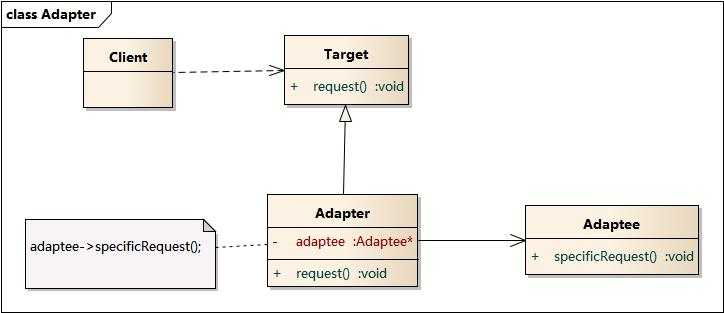

最近看了一遍《Objective-C编程之道》这本书，结合《大话设计模式》以及网上的一些资料，对设计模式有了一个系统的认识。特摘录了原始的设计模式定义、iOS中设计模式的应用以及以前项目中运用到的地方。
设计原则
说到设计模式，先说为什么要用设计模式。在软件设计中有六大基本原则，而设计模式就是为了遵循这些原则而生。在做软件开发时，总是会有很多类似的场景，前人针对这些场景总结了一套软件设计方法，是为设计模式。所以编写软件的目标是能尽可能地遵从设计原则，设计模式只是一种手段。而学习设计模式是开拓自己设计思维的绝佳方式。所以学习设计模式，重点是要让自己理解设计原则，并具备设计出遵从设计原则的软件的能力。下面列出设计原则：
- 单一职责原则
- 里氏代换原则
- 依赖倒置原则
- 接口隔离原则
- 最小知识原则(迪米特法则)
- 开放关闭原则
其中核心是开放关闭原则（简称开闭原则，意思对扩展开放，对修改关闭），其余五条可看作是遵从开闭原则的具体实现方法。这里有一篇写六大设计原则的文章，个人觉得写得很好:
创建型设计模式
原型(Prototype)
类图
定义
- 使用原型实例指定创建对象的种类，并通过复制这个原型创建新的对象
使用场景
- 需要创建的对象应独立于其类型与创建方式
- 要实例化的类是在运行时决定的
- 不想要与产品层次对应的工厂层次
- 不同类的实例间的差异仅是状态的若干组合。因此复制相应数据的原型比手工实例化更方便
- 类不容易创建，比如每个组件可把其他对象作为子节点的组合对象。复制已有的组合对象并对副本进行修改会更加容易。
iOS中的应用：
NSCopying协议
项目中的应用：
儿童模式：数据模型需要保存原数据和变更后数据，以便保存失败时还原。
工厂方法(Factory Method)
类图

定义
- 定义创建对象的接口，让子类决定实例化哪一个类。工厂方法使得一个类的实例化延迟到其子类。
使用场景
- 编译时无法准确预期要创建的对象的类
- 类想让其子类决定在运行时创建什么
- 类有若干辅助类为其子类，而你想将返回哪一子类这一信息局部化
iOS中的应用
NSNumber的 numberWith*** 类方法
项目中应用
Web agent：Web页根据不同的url得到不同的标题、web view配置信息
抽象工厂(Abstract Factory)
类图

定义
- 提供一个创建一系列相关或相互依赖对象的接口，而无需指定它们具体的类。
使用场景
抽象工厂本质与工厂方法相同，是工厂方法的一种扩展。当产品不只一类时，使用抽象工场
iOS中的应用
NSNumber的 numberWith*** 类方法
项目中应用
设备附加信息：根据设备型号得到设备附加信息。
建造者(Builder)
类图

定义
- 将一个复杂对象的构建与它的表现分离，使得同样的构造过程中以创建不同的表现。
使用场景
需要创建涉及各种部件的复杂对象。创建对象的算法应该独立于部件的装配方式。常见例子是构建组合对象。
构建过程需要以不同的方式(例如，部件或表现的不同组合)构建对象。
iOS中应用
Masonry
项目中应用
Android项目中的内部builder类。
注：大部分情况下是对Builder模式的缩减版，由于builder只会有一个实例，所以省略了接口层和director。
单例(Singleton)
类图

定义
- 保证一个类仅有一个实例，并提供一个访问它的全局访问点。
使用场景
- 类只能有一个实例，而且必须从一个为人熟知的访问点对其进行访问。
这个唯一的实例只能通过子类化进行扩展，而且扩展的对象不会破坏客户端的代码。
iOS中应用
UIApplication
项目中应用
登录接口
网络接口
浮窗管理
跳转中心
推送管理
分享接口
接口适配
适配器(Adapter)
类图
定义
- 将一个类的接口转换为客户希望的另一个接口适配器模式使得原本由于接口不兼容而不能一起工作的那些类可以一起工作。
使用场景
- 已有类的接口与需求不匹配
- 想要一个可复用的类，该类能够同可能带有不兼容接口的其他类协作。
iOS中应用
UITableView、UICollectionView等类的实现
注：UITableView等系统类是模式中的Client，实现Delegate协议的类是Adapter。Android中的实现方式是为ListView创建了一个抽象类，具体Adapter继承这个抽象类。实际上是一样的，只是一个用协议，一个用抽象类。
项目中应用
Table View Manager
Push封装层
使用UIView实现TableViewCell
其他说明
Objective-C编程之道这本书中使用block实现适配器的例子有循环引用问题。
桥接(Bridge)
类图

定义
- 将抽象部分与它的实现部分分离，使它们都可以独立地变化。
使用场景
享元模式：
常量字符串
数据库连接池
线程池
cell重用
组合：
UIView层级
命令：
target action
中介者：
跳转中心？
策略：
UIView与Controller
观察者：
NSNotificationCenter
KVO